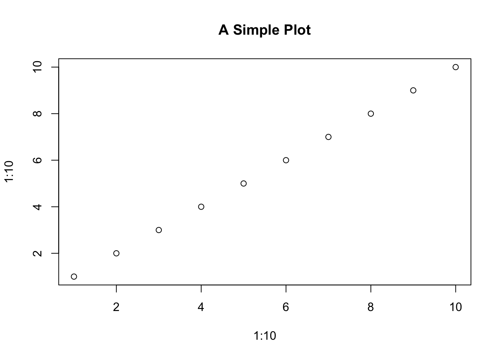
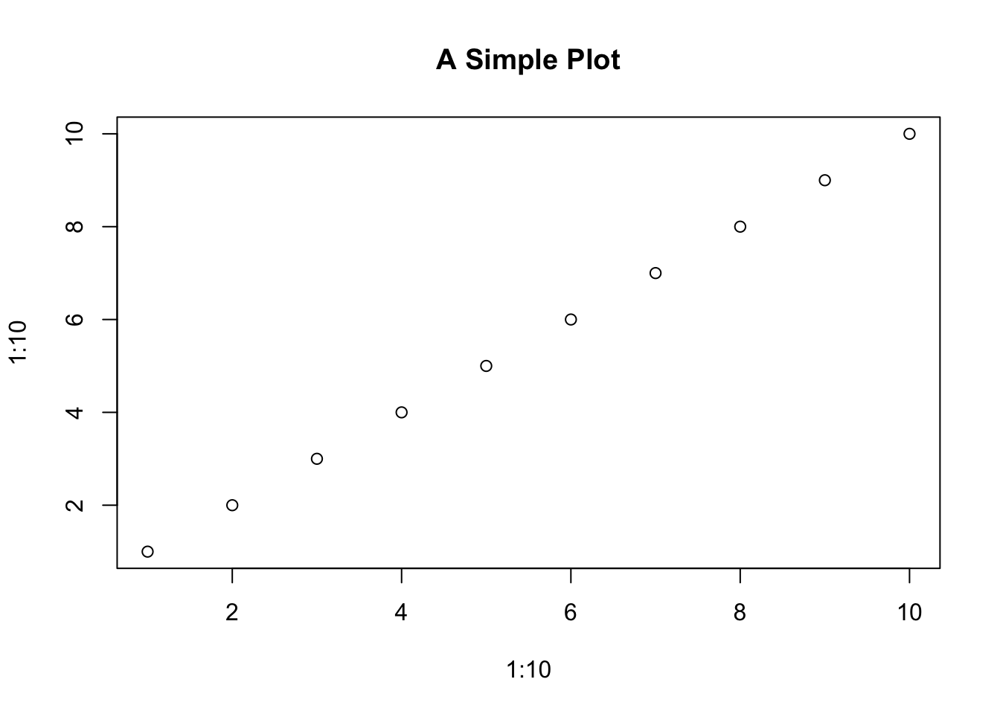

plot(1:10, 1:10, main = "A Simple Plot")
This is a demonstration file for Assignment 2.
This section will change depending on the branch
plot(1:10, 1:10, main = "A Simple Plot")
After setting up the RStudio project and writing this example.qmd file, I used the terminal to initialise version control using Git and connect it to a GitHub repository.
Initialising Git allows version tracking of all changes made in the project. Connecting to GitHub enables cloud backup and collaboration.
# Initialise git repository
git initgit add .git commit -m "Initial commit: setup project and added example.qmd"git remote add origin https://github.com/YOUR_USERNAME/YOUR_REPO_NAME.gitgit branch -M maingit push -u origin mainTo simulate collaborative development, I created a new branch called testbranch, made a change to the example.qmd file, committed the update, and pushed the branch to GitHub.
Using branches allows developers to experiment or work on features in isolation without affecting the main project. It supports safer collaboration and better version tracking.
# Create and switch to a new branch
git checkout -b testbranchgit add example.qmd
git commit -m "Added new Git section in testbranch"git push -u origin testbranchThis is a line added in the test branch
To track the dataset used in Assignment 1, I created a data/ folder and included relevant files. Instead of making a new commit, I amended the previous one to keep the commit history clean.
Amending commits is useful for minor corrections to the most recent commit — such as adding forgotten files — without cluttering the history.
data/ in the RStudio project directory.data/ folder (e.g., dataset.csv).git add data/git commit --amend --no-editgit push --forcemain to Cause a Conflict with testbranchAfter pushing changes from testbranch, I switched back to the main branch and made a conflicting edit to the same section of example.qmd. This ensures a conflict when merging later.
Conflicts naturally occur in collaborative workflows. This step demonstrates how to simulate and later resolve a conflict — a key Git skill.
# Switch back to main branch
git checkout maingit add example.qmd
git commit -m "Conflicting edit in example.qmd on main"git pushtestbranch into main and Resolve ConflictNow that both main and testbranch have conflicting changes to the same part of example.qmd, I attempted to merge testbranch into main. As expected, Git detected a conflict.
Conflicts are a natural part of collaborative development. Resolving them cleanly is crucial to maintaining a functioning codebase.
# Ensure we are on main
git checkout main# Pull latest changes to main (if needed)
git pull# Merge testbranch into main|
git merge testbranch